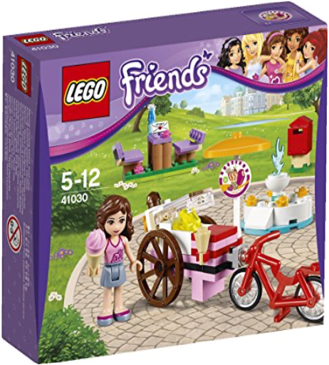
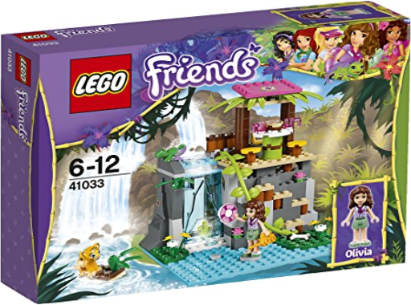
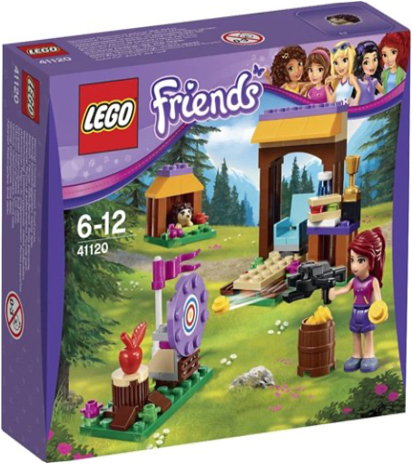
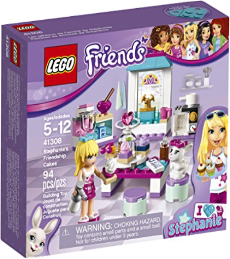

Protège les nageurs grâce au Poste de Sauvetage d'Emma de la collection Lego Friends. Hisse le drapeau rouge pour prévenir les baigneurs et lance la bouée. Le Poste de Sauvetage est équipé d'une bouée, des drapeaux, un kit de secours, des palmes, un château de sable, un parasol, un seau et des jumelles. Le coffret comprend les briques pour construire le poste de sauvetage, la mini figurine d'Emma, un dauphin et des accessoires. A partir de 5 ans.  Viens t'amuser avec l'ensemble LEGO Friends - Stéphanie et son bébé mouton - 41029. Aide Stéphanie à t'occuper de son bébé mouton, à le réveiller dans le lit confortable et à lui donner un petit déjeuner de lait frais. Puis donne-lui un bon bain chaud avec l'eau tiède du robinet. Fais sa toilette en utilisant tous les accessoires. Donne-lui une rosette pour montrer comme il est beau.Inclut une minipoupée Stéphanie et son bébé mouton. Comprend une jolie petite maison avec un lit, un placard, un tabouret et une baignoire avec un robinet • Les accessoires incluent 2 rosettes, des bouteilles de lait, et tout le nécessaire pour faire la toilette de l'agneau.Donne une rosette au bébé mouton pour lui montrer cmme il est beau ! • La maison mesure plus de 9 cm de haut, 8 cm de large et 5 cm de profondeur.  lego friends - 41030 - le stand de glace d'olivialego Prépare de délicieuses glaces et vends-les grâce au coffret du stand de glace d'Olivia de la collection Friends de Lego. Pédale jusqu'au parc de Heartlake City et aide Olivia à installer son stand de glace à côté de la fontaine. Jette des pièces dans la fontaine pour te porter bonheur et aide Olivia à poster une lettre avant de rentrer chez elle. Ce coffret comprend les briques et les éléments pour construire le stand et la fontaine ainsi qu'une figurine d'Olivia. A partir de 5 ans.  lego friends - 41033 - sauvetage dans les cascades de la junglelego Aide le tigreau en difficulté grâce au coffret du sauvetage dans les cascades de la jungle de la collection Friends de Lego. Fonce vers la rive et aide le bébé tigre bloqué dans les eaux puissantes de la chute d'eau. Avance dans l'eau et aide Olivia à construire un barrage pour arrêter la cascade avant de hisser le tigre pour le mettre à l'abri. Ce coffret comprend les briques et les éléments pour construire la cascade ainsi qu'une figurine d'Olivia, un tigre et un caméléon. A partir de 6 ans. lego friends - 41090 - la piscine d'olivialego Il fait chaud aujourd'hui à Heartlake City, alors va te baigner dans la piscine d'Olivia grâce a ce coffret Lego Friends. N'oublie pas d'aider Olivia à mettre sa crème solaire avant de plonger. Détends-toi sur la bouée avec une boisson fraîche, puis joue sur le toboggan avec la tortue qui est venue en visite. Assieds-la à l'ombre sous le parasol pour manger des cerises et écouter de la musique sur le lecteur MP3. À combiner avec la maison d'Emma (41095), vendu séparément, pour créer le jardin parfait. Inclut une minipoupée Olivia et une tortue. Ce coffret comprend les briques et les éléments pour assembler la piscine en forme de cœur et le toboggan, le lecteur MP3, le parasol, la table et l'anneau qui flotte. Les accessoires incluent une paire de lunettes de soleil, 2 verres, un ballon, des cerises, de la crème solaire et une fleur pour les cheveux. A partir de 5 ans.  Va faire un tour avec Mia dans sa magnifique décapotable bleue avec ce coffret Lego Friends. C'est une belle journée à Heartlake City, alors Mia met ses lunettes de soleil et part à la rencontre de ses amis. Mais va d'abord faire le plein d'éco-carburant à la station à essence. Remets de l'huile et vérifie la voiture avec les outils de l'atelier de réparation, puis aide Mia à laver sa voiture pour la rendre super brillante. Mets son sac dans le coffre et elle est prête à prendre la route à nouveau. Ce coffret comprend la minipoupée Mia, les briques et les éléments pour assembler le véhicule et la pompe à essence et les accessoires. A partir de 6 ans. lego friends - 41111 - le train des animauxlego Regardez dans la boîte aux lettres : Heidi et Harry les hamsters ont été invités à une fête d'anniversaire ! | lego friends - 41115 - l'atelier de couture d'emmalego Emma est en train de coudre de magnifiques rubans pour les cheveux afin de les vendre sur sa boutique en ligne.  lego friends - 41120 - tir à l'arc à la base d'aventurelego Mia veut remporter le trophée de tir à l'arc alors dirigez-vous vers le stand de tir pour l'aider à s'entraîner. lego friends - 41127 - l'arcade du parc d'attractionslego Mia s'amuse à jouer aux jeux dans l'Arcade et elle s'améliore tout le temps.  lego friends - 41308 - les gâteaux de l'amitié de stéphanielego Play at baking delicious cupcakes in the kitchen with this fun LEGO Friends stephanie’s friendship cakes set. Take the ingredients from the opening cupboard and help Stephanie use the mixer, then pop the cakes in the opening oven. Choose from a range of toppings to decorate the cakes and display them on the turning cake stand, then wash the dishes in the kitchen sink. Includes a mini-doll figure plus a bunny figure. lego friends - 41309 - le duo musical d'andréalego Chantez à tue-tête avec Andréa et son perroquet de compagnie.  The LEGO Friends snow resort ski lift is the ultimate winter sports resort for the friends from Heartlake City. Enjoy the mountaintop restaurant, working ski lift, ski slope sliding function, rock climbing wall, ski hire stand, trail map and the little bear with his own slope and mountain cave. There are enough activities to keep you busy all winter! includes 2 mini-doll figures, plus a bear cub figure.  Emma pulls her art kiosk on her cool scooter in the Heartlake City Park. Here she prefers to paint her caricatures. Open the windows to show the pictures she wants to sell today, and help her at checkout. Her kitten Chico naps on his bed while Emma works on her easel on her latest work of art. Your best friends are your biggest inspiration! |

Julien
Collection Total:
1 893 Items
1 893 Items
Last Updated:
Oct 20, 2021
Oct 20, 2021
 Made with Delicious Library
Made with Delicious Library